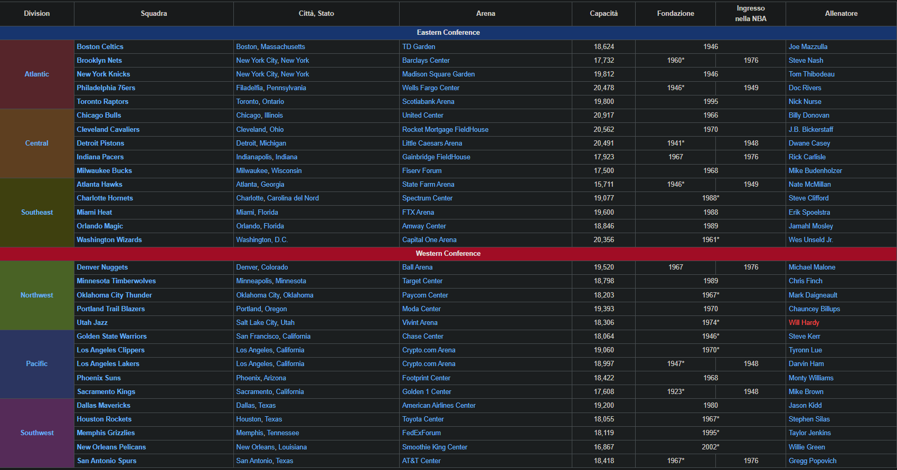

La National Basketball Association fu fondata nel 1946, ed era composta da 11 squadre. Successivamente, ci furono espansioni, riduzioni, e rilocazioni fino ad arrivare alle 30 squadre attuali (29 delle quali statunitensi e una canadese). La lega attualmente divide le squadre in due conference, ognuna delle quali ha tre division, e ogni division ha cinque squadre. L'attuale suddivisione è stata introdotta dalla stagione 2004-05.

Squadre della NBA scomparse: Anderson Packers dal 1949 al 1950; Baltimore Bullets dal 1947 al 1955; Chicago Stags dal 1946 al 1950; Cleveland Rebels dal 1946 al 1947; Detroit Falcons dal 1946 al 1947; Indianapolis Jets dal 1948 al 1949; Indianapolis Olympians dal 1949 al 1953; Pittsburgh Ironmen dal 1946 al 1947; Providence Steamrollers dal 1946 al 1949; Sheboygan Red Skins dal 1949 al 1950; St. Louis Bombers dal 1946 al 1950; Toronto Huskies dal 1946 al 1947; Washington Capitols dal 1946 al 1951; Waterloo Hawks dal 1949 al 1950.